Golden yearsbelong at home.
We take in at-risk, elderly and special-needs dogs and cats, give them the vet care they've been missing, and find them families who'll make their golden years their best ones.
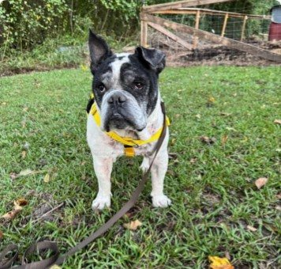
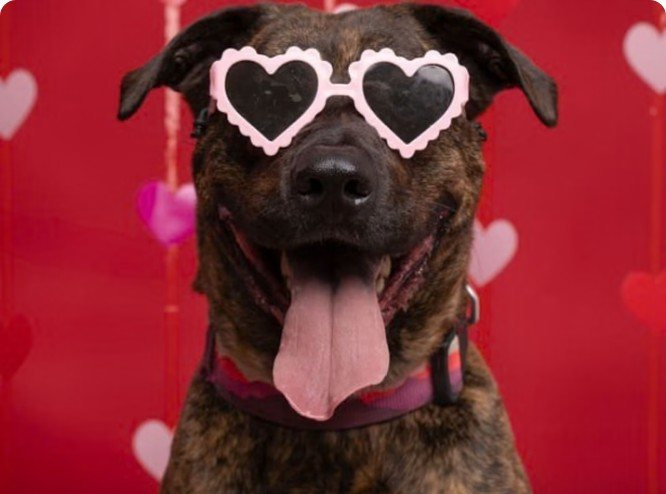
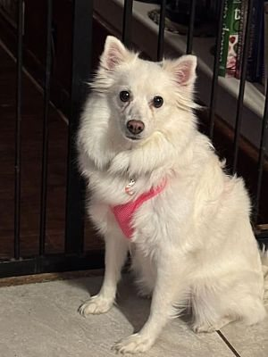
In early 2021, Danielle Miller started fostering the dogs and cats shelters struggle to place: the seniors and the special-needs pets. That foster home became Hamilton's Healing Hearts.
Who's here now
Three steps,and a 10-day try-out.
Apply
Fill out the adoption application online. It takes about ten minutes and helps us match you with the right pet.
Meet the pet
Take your match home for a 10-day try-out, so you both know it's right before anything is final.
Sign the contract
Sign the adoption contract and your new family member is officially home.
Adopt
Give a senior or special-needs pet the soft landing they've been waiting for.
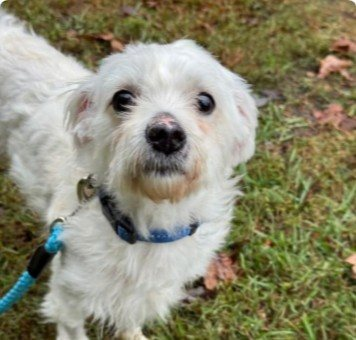
Foster
Open your home for a while. We cover supplies and vet care, you cover the couch.
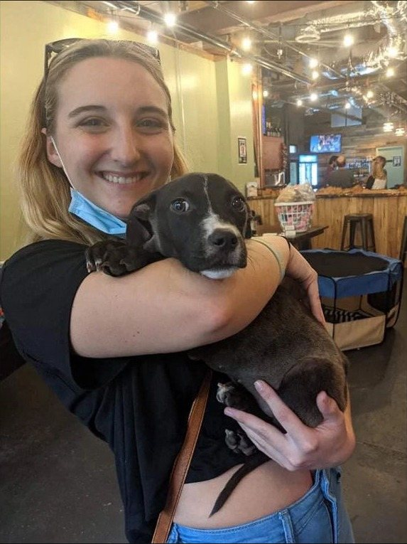
Volunteer
Walk dogs, help on the farm, drive transports or work an adoption event.
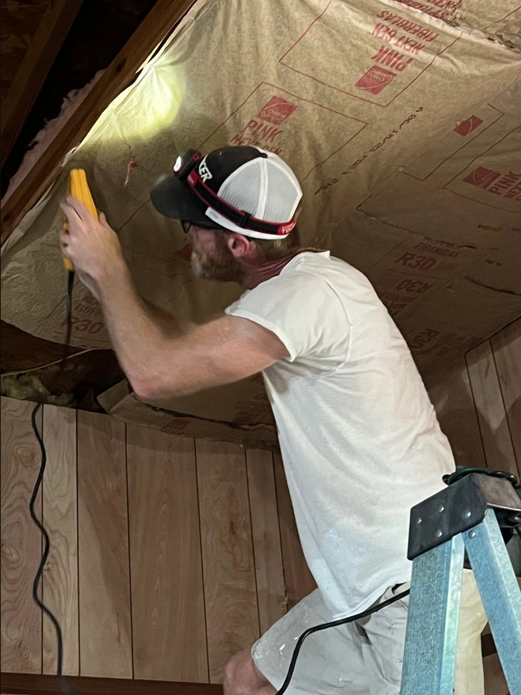
Donate
Every gift goes to vet bills, warm kennels and the farm that keeps them safe.
Old dogs needmore care, not less.
Senior and special-needs pets often need dental work, bloodwork and daily medication. Donations are what let us say yes to them.
@HamiltonsHearts2021Medical and vet care
Exams, surgery, dental care and the daily medicine that keeps an older pet comfortable.
A safe, loving shelter
Insulated kennels, clean bedding, good food and a quiet farm while they wait for a family.
The power of giving
Every gift, big or small, goes straight to the pets in our care.
Not justdogs and cats.
The rescue lives on a working farm in Willard, with pigs, cows and a crew of volunteers who keep the kennels warm and the gates fixed. Come see it for yourself. We're always open by appointment.
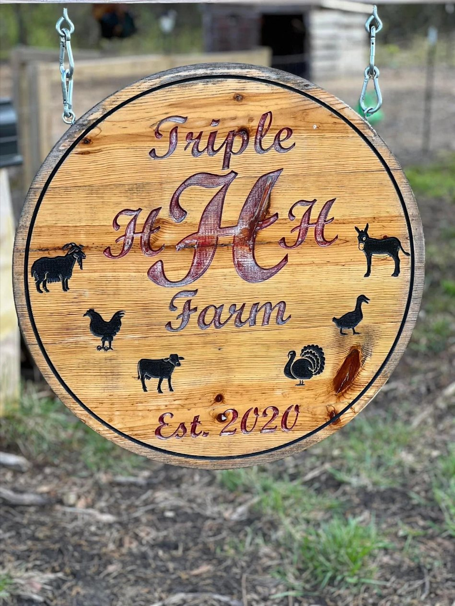
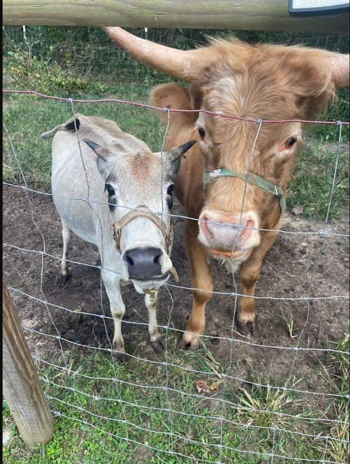
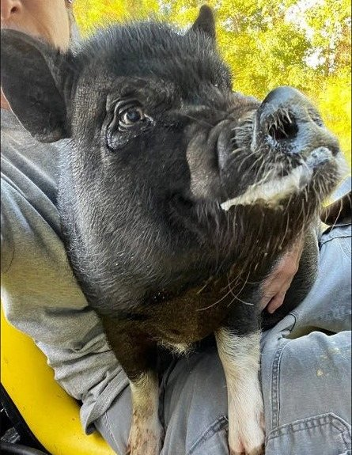
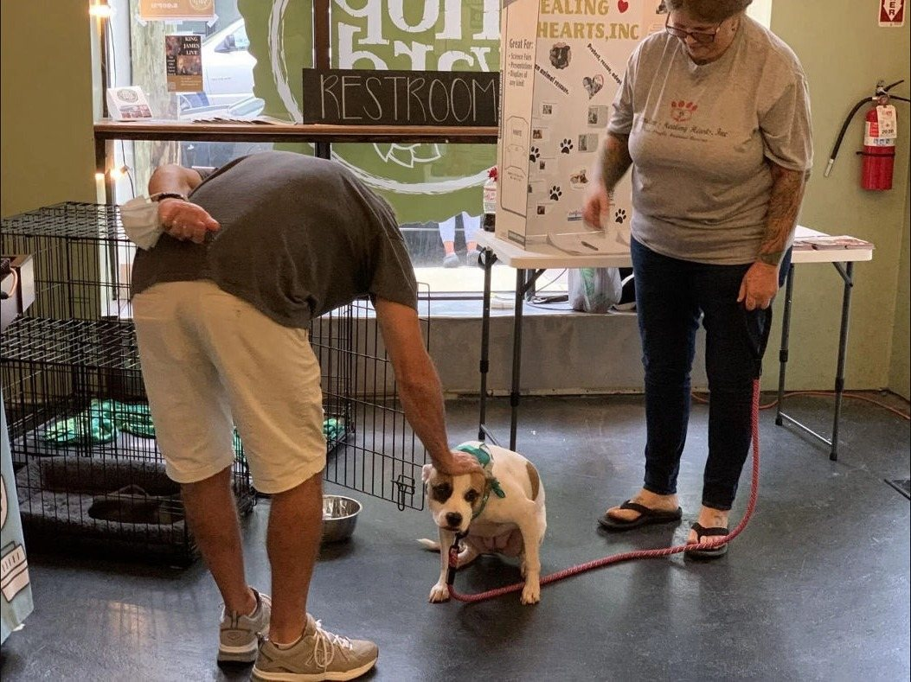
Find yournew old friend.
Every pet here has been vetted, loved on and gotten to know by our crew. Tell us about your home and we'll help you find the right match.
Listings shown November 2026. Ask about any pet by applying, and we'll reach out to set up a meeting.
Where we adopt
We place pets within 100 miles of Pender County, North Carolina.
The try-out
Every adoption starts with a 10-day stay at home, so you can see how your pet settles in before you sign.
Fees
Fees are set case by case. We'll go over it with you before the try-out.
Visiting
We are always open. Call or email to schedule a visit to the rescue and meet the pets in person.
Not ready to adopt?You can still help.
Foster
Give a pet a break from the kennel. Supplies and vet care are covered by the rescue.
Volunteer
Help with farm chores, transport, events and plain old dog walking.
Surrendering a pet
If you can no longer care for an older or special-needs pet, reach out and we'll talk through options with you.
Come say hiin person.
We bring adoptable pets to adoption events around Leland and Brunswick County, and new dates get posted to our social pages first.
Visit the rescue
We're always open. Call (910) 271-5170 or email us to schedule a visit to the farm in Willard.
Spring Adopt-a-thon
Petsense, 1215 West Gate Dr, Leland. 10 AM to 3 PM.
Partners in Paws
Brunswick County Animal Protective Services, 429 Green Swamp Rd NW, Supply. 10 AM to 2 PM.
New events are announced on Facebook and Instagram. Follow us there to hear first.
As seen on WECT. Our Mr. Wilson made his live TV debut on WECT.
Keep a greymuzzle going.
Hamilton's Healing Hearts, Inc. is a 501(c)(3) nonprofit. Your gift pays for vet care, shelter and food for the pets other places pass over.
Mail a check
Make it out to Hamilton's Healing Hearts, Inc.
7494 NC Highway 11
Willard, NC 28478
2026 Grey Muzzle Incubator Grantee. We were selected for The Grey Muzzle Organization's incubator grant, which supports rescues growing their programs for senior dogs.
Every dollarhas a name.
Right now that's Ruby, Titus, Bobo and the six others waiting for a family. Next month it'll be whoever needs us next.
Medical and vet care
Exams, surgery, dental work and ongoing medication for seniors and special-needs pets.
Safe and loving shelter
Warm kennels, bedding and good food on the farm while they wait.
Sponsor through TREAT
We're on the TREAT app, where you can sponsor and visit our adoptable dogs.
A farm full ofsecond chances.
A small crew in Pender County, caring for the pets who need the most and get chosen the least.
It started in early 2021, when Danielle Miller began fostering dogs and cats out of her home. That work became Hamilton's Healing Hearts.
From the start, the focus has been the pets most shelters struggle to place: seniors, and dogs and cats with special needs. They get vet care, a warm kennel on the farm, and as much time as it takes to find the right family.
In early 2024, Maddie Bushey joined as a volunteer and took on fostering, transport and the rescue's social pages. Today the rescue is a 501(c)(3) with a board, a team of volunteers and a 2026 Grey Muzzle Incubator grant.
Every pet deservesa soft place to land.
Our mission
To rescue at-risk, elderly and special-needs dogs and cats, give them the medical care and comfort they need, and place them in loving homes.
Our vision
A community where older and special-needs pets live out their golden years safe, loved and at home.
The people behind the pets
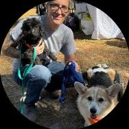
Danielle Miller
Founder and DirectorMoved to North Carolina from New Hampshire in 2010 after a fire took her home and rescue. Certified in animal search and rescue, trained in canine and feline CPR, and helped the Pender County shelter through Hurricane Florence.
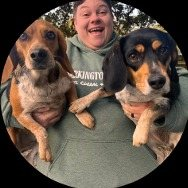
Maddie Bushey
PresidentVolunteering since early 2024. Fosters, drives transports, and runs our Facebook, Instagram and merch.
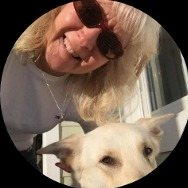
Wendy Schraen
Board MemberAlso volunteers at the Brunswick County animal shelter, and shares her home with three rescue dogs.
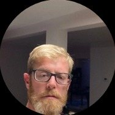
Chris Caison
Volunteer, maintenance and farmNavy veteran (2000 to 2005) who works at the VA in Onslow County. He's the reason the kennels are insulated.
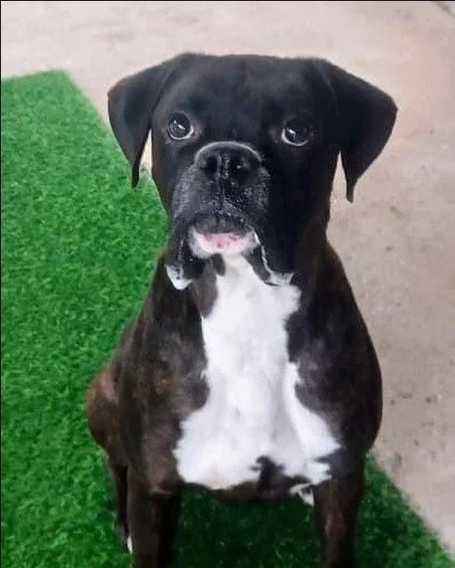
Every one of themwent home.
Hazel, adopted November 10, 2021, was one of the first. Adopted from us? Send a photo and we'll add your pet to the wall.
Call, email or stop by
Call to schedule a visit.
For adoption, fostering and volunteer questions.
Visits by appointment.